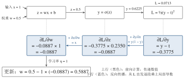

2.1 神经网络：从一个神经元到深度网络
大模型是一个参数多达数十亿乃至上万亿的函数。这个函数由什么零件搭成，参数又是怎样从数据中学出来的？本节从 1943 年的 M-P 神经元讲起：感知机第一次让权重可以从错误中学习；异或问题说明单层网络不够，必须加隐藏层；反向传播用链式法则一次算出所有参数的梯度，梯度下降再据此更新参数。结论是：训练一个千亿参数的模型，与训练一个神经元遵循同一条规则——衡量预测错了多少，再把每个参数朝减小错误的方向挪一点。
2.1.1 从逻辑到神经元
二十世纪初，德国数学家希尔伯特（David Hilbert）提出了一个计划：找到一套有限的公理和推理规则，使全部数学都能从中严格推出，并且这套系统既完备（每个命题都能判定真假）又自洽（不会推出矛盾）。罗素（Bertrand Russell）与怀特海在 1910—1913 年出版的《数学原理》中，尝试从“与、或、非”等基本逻辑出发构造出算术。
这个计划的两个目标先后被否定。1931 年，哥德尔证明了不完备定理：任何自洽且足以表达算术的形式系统，都存在系统内部既不能证明、也不能反驳的命题，“完备且自洽”不可兼得。1936 年，图灵用一台抽象的“图灵机”精确定义了什么是算法，并证明不存在一个通用算法能判定任意程序是否会停机（停机问题），从而否定了希尔伯特提出的“判定问题”——不存在一个机械方法能判定任意数学命题的真假[1]。
否定性的结论附带了一个肯定性的成果：“可计算”从此有了精确定义。在此基础上，神经生理学家麦卡洛克（Warren McCulloch）和数学家皮茨（Walter Pitts）于 1943 年提出了第一个神经元数学模型——M-P 模型[2]： \[y = f\Bigl(\sum_{i=1}^{n} w_i x_i - \theta\Bigr),\qquad f(z)=\begin{cases}1, & z\ge 0,\\ 0, & z<0,\end{cases} \tag{2-1}\] 其中 \(x_i\) 是输入信号，\(w_i\) 是突触权重，\(\theta\) 是阈值。神经元先对输入加权求和，超过阈值就输出 1（“激活”），否则输出 0。适当选取权重和阈值，单个 M-P 神经元就能实现“与”“或”“非”；把它们连成网络，就能实现任意的逻辑函数。M-P 模型的权重是人工设定的，它还不会“学”。表 2-1 列出了此后神经网络发展的几个里程碑。
表 2-1 神经网络发展的里程碑
| 年份 | 里程碑 | 解决了什么、留下了什么 |
|---|---|---|
| 1943 | M-P 神经元模型 | 神经元可以做逻辑运算，但权重靠人工设定 |
| 1958 | 罗森布拉特感知机 | 权重可以从数据中学出来，但只能解线性可分问题 |
| 1969 | 明斯基与帕珀特《感知机》 | 指出单层感知机解不了异或，研究进入低谷 |
| 1986 | 反向传播的推广 | 多层网络可以高效训练，异或迎刃而解 |
| 1989 | 万能逼近定理 | 单隐层网络能以任意精度逼近连续函数 |
| 2012 | AlexNet 赢得 ImageNet 竞赛 | GPU、大数据与深度网络的组合首次大幅胜出 |
| 2017 | Transformer | 可大规模并行训练的序列模型，成为大模型的标准骨架 |
2.1.2 感知机：从错误中学习
1958 年，罗森布拉特（Frank Rosenblatt）提出的感知机（perceptron）第一次让权重可以从数据中自动学出来[3]。感知机对输入向量 \(\boldsymbol{x}\) 加权求和后取符号，输出 \(\hat{y}=\operatorname{sign}(\boldsymbol{w}\cdot\boldsymbol{x}+b)\in\{+1,-1\}\)。每当它在一个样本上判错，就按下式修正： \[\boldsymbol{w} \leftarrow \boldsymbol{w} + \eta\,(y-\hat{y})\,\boldsymbol{x},\qquad b \leftarrow b + \eta\,(y-\hat{y}), \tag{2-2}\] 其中 \(y\) 是正确答案，\(\eta\) 是学习率，控制每次修正的幅度。判对时 \(y-\hat{y}=0\)，参数不动；正样本被判成负的，\(y-\hat{y}=2\)，权重向这个样本的方向拉近；反之则推远。可以证明（诺维科夫，1962）：只要两类样本能被一个超平面分开（线性可分），这个过程一定在有限步内停下来，这称为感知机收敛定理。
“用误差修正参数”的思想一直延续到今天。训练千亿参数的大模型，仍然是在每个词元上衡量“预测错了多少”，再把参数朝减小错误的方向挪一点；区别只在于“错多少”换成了可微的损失函数，“往哪挪”交给了下文的反向传播。
2.1.3 异或与隐藏层
1969 年，明斯基（Marvin Minsky）与帕珀特（Seymour Papert）指出，单层感知机连异或（XOR）都学不会[4]。把异或的四个输入画在平面上，\((0,1)\) 与 \((1,0)\) 输出 1，\((0,0)\) 与 \((1,1)\) 输出 0，两类点分居对角，没有任何一条直线能把它们分开。
表 2-2 的后三列给出了解法：先用两个隐藏神经元分别计算“或”（OR）和“与非”（NAND），它们各自都是线性可分的；再用一个输出神经元对这两个中间结果取“与”（AND），结果恰好等于异或。
表 2-2 用两层网络实现异或
| \(x_1\) | \(x_2\) | XOR | \(h_1=\) OR\((x_1,x_2)\) | \(h_2=\) NAND\((x_1,x_2)\) | AND\((h_1,h_2)\) |
|---|---|---|---|---|---|
| 0 | 0 | 0 | 0 | 1 | 0 |
| 0 | 1 | 1 | 1 | 1 | 1 |
| 1 | 0 | 1 | 1 | 1 | 1 |
| 1 | 1 | 0 | 1 | 0 | 0 |
这个例子说明了隐藏层的作用：把输入变换到一个新的表示空间。在 \((x_1,x_2)\) 空间里线性不可分的问题，到了 \((h_1,h_2)\) 空间里就线性可分了——四个点只落在 \((0,1)\)、\((1,1)\)、\((1,0)\) 三处，一条直线就能把 \((1,1)\) 与另外两点分开。大模型的几十上百层网络做的是同一件事的放大版：一层层地把文字变成越来越抽象的表示。当时的困难在于，没有人知道怎样高效地训练多层网络：输出层判错了，隐藏层的权重该各负多少责任？
2.1.4 反向传播：链式法则的工程化
1986 年，鲁梅尔哈特（David Rumelhart）、辛顿（Geoffrey Hinton）和威廉姆斯（Ronald Williams）在《自然》上推广了反向传播（backpropagation）算法[5]，回答了这个问题；这一思想更早由韦伯斯（Paul Werbos，1974）等人提出。为了能求导，先把阶跃函数换成光滑的 sigmoid 函数 \(\sigma(z)=1/(1+e^{-z})\)，把“判错了没有”换成可微的损失函数 \(\mathcal{L}\)，例如平方误差。于是网络从输入到损失是一串复合函数，损失对任一参数的导数，等于沿途各段导数的乘积——这就是微积分中的链式法则。
反向传播的做法分两趟（图 2-2）。前向一趟从输入算到损失，并把每个中间结果记下来；反向一趟从损失出发，逐段乘上局部导数，把梯度传回每个参数。它的关键在于复用：第 \(l\) 层的梯度可以由第 \(l+1\) 层已经算好的梯度直接得到，所以一次反向遍历就能得到全部参数的梯度。反向传播本身的计算量约为前向的 2 倍，因此一次训练步（前向 + 反向）约为前向的 3 倍。第 2.4.2 小节“每个参数每个词元约 6 次浮点运算”中的 6，就是前向 2 次加反向 4 次。

图 2-2 一个神经元的计算图（数值取自例 2-1）。上行是前向计算；下行是反向传播，每个梯度等于右边的梯度乘以本段的局部导数；虚线把每个运算与它对应的梯度对齐
例 2-1 手算一次反向传播
一个神经元：\(z=wx+b\)，\(y=\sigma(z)\)，损失 \(\mathcal{L}=\tfrac12(y-t)^2\)。取输入 \(x=1\)，初始权重 \(w=0.5\)，偏置 \(b=0\)（本例固定不更新），目标 \(t=1\)，学习率 \(\eta=1\)。求一次更新后的 \(w\)，并检查损失是否下降。
| 步骤 | 算什么 | 算式 | 结果 | 这个数从哪来 |
|---|---|---|---|---|
| 1 | 前向：\(z\) | \(z=0.5\times1+0\) | \(0.5\) | 题设 \(w\)、\(x\)、\(b\) |
| 2 | 前向：\(y\) | \(y=1/(1+e^{-0.5})\) | \(0.6225\) | 第 1 步的 \(z\) |
| 3 | 前向：\(\mathcal{L}\) | \(\tfrac12\times(0.6225-1)^2\) | \(0.0713\) | 第 2 步的 \(y\)，题设 \(t\) |
| 4 | \(\partial\mathcal{L}/\partial y\) | \(y-t=0.6225-1\) | \(-0.3775\) | 对 \(\tfrac12(y-t)^2\) 求导 |
| 5 | \(\partial y/\partial z\) | \(y(1-y)=0.6225\times0.3775\) | \(0.2350\) | sigmoid 的导数 \(\sigma(1-\sigma)\) |
| 6 | \(\partial z/\partial w\) | \(x\) | \(1\) | 对 \(wx+b\) 求导 |
| 7 | 链式相乘 | \((-0.3775)\times0.2350\times1\) | \(-0.0887\) | 第 4、5、6 步相乘 |
| 8 | 更新 \(w\) | \(0.5-1\times(-0.0887)\) | \(0.5887\) | \(w\leftarrow w-\eta\,\partial\mathcal{L}/\partial w\) |
| 9 | 新损失 | \(y'=\sigma(0.5887)=0.6431\)，\(\tfrac12\times(0.6431-1)^2\) | \(0.0637\) | 用新 \(w\) 重做第 1～3 步 |
数据流向：\(x,w\to z\to y\to\mathcal{L}\)（前向）；\(\mathcal{L}\to\partial\mathcal{L}/\partial y\to\partial\mathcal{L}/\partial z\to\partial\mathcal{L}/\partial w\)（反向）；\(\partial\mathcal{L}/\partial w\to\) 新 \(w\)。梯度为负，说明增大 \(w\) 能减小损失，于是 \(w\) 从 0.5 增大到 0.5887，损失从 0.0713 降到 0.0637。
真实网络中，这条链会穿过几十层、涉及几十亿个参数，原理完全相同。今天的 PyTorch 等框架把这一过程封装成自动微分，开发者只需写出前向计算，梯度由框架按计算图自动求出（第 4.3.2 小节）。
2.1.5 梯度下降与优化器
有了梯度，最直接的更新方式是梯度下降：\(\theta\leftarrow\theta-\eta\,\nabla_\theta\mathcal{L}\)，其中 \(\theta\) 代表全部参数。大模型的训练数据有万亿词元，每一步不可能遍历全部数据，于是每次随机取一小批样本，用它们的平均梯度 \(g\) 代替全量梯度，这就是随机梯度下降（Stochastic Gradient Descent，SGD）： \[\theta_t = \theta_{t-1} - \eta\, g_t . \tag{2-3}\]
学习率 \(\eta\) 的取值有讲究：太小，收敛很慢；太大，参数会越过最低点，损失反而上升甚至发散（习题 {{2.2）。大模型的损失曲面又极不规则，不同参数的梯度可能相差几个数量级，统一的学习率很难兼顾。因此大模型几乎都使用 Adam 优化器[6]（实践中多为带解耦权重衰减的 AdamW）：它为每个参数分别维护梯度的滑动平均（一阶矩，相当于“惯性”）和梯度平方的滑动平均（二阶矩），用后者给每个参数一个自适应的步长——梯度一直很大的参数走得谨慎些，梯度很小的参数走得大胆些。Adam 的更新公式、学习率预热与衰减等细节见第 3 章。要记住的一个代价是：Adam 为每个参数多存两份状态，训练所需显存因此是权重本身的数倍（估算方法见第 4.3.3 小节）。
2.1.6 万能逼近与“深度”的意义
1989 年，赛本科（George Cybenko）证明了万能逼近定理[7]：只要隐藏神经元足够多，使用 sigmoid 这类激活函数的单隐层神经网络，就能以任意精度逼近有界闭区域上的任何连续函数（此后的工作把条件放宽到一般的非多项式激活函数）。这个定理保证了神经网络“表达得了”，却没有说“学得会”，也没有说需要多少神经元。实践和理论都表明，增加深度往往比增加宽度更有效：深层网络可以复用低层学到的特征，从字符到词、从词到句法、从句法到语义，逐层组合出复杂的概念。“深度学习”中的“深度”指的就是这一点。
本节要点
神经元先加权求和再经过激活函数；隐藏层把输入换到新的表示空间，使线性不可分的问题变得可分。
反向传播用链式法则从损失出发逐层传回梯度，其计算量约为前向的 2 倍；梯度下降据此更新参数。
大模型用 Adam 类优化器给每个参数自适应步长，代价是额外的优化器状态显存。